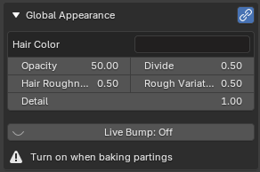

Appearance¶
Applies to: Parting Placer V2.0.0 · Blender 4.4 · 5.2
These sliders set how a parting looks. Each parting has its own set, unless you link them.

The box sits under the parting list, once the head has at least one parting. Its heading tells you what you are editing:
| Heading | Means |
|---|---|
| Global Appearance | Link Appearance is on. One set of values drives every parting. |
| Appearance · Parting 002 | Link Appearance is off. You are editing the parting named after the dot. |
| Appearance | Link Appearance is off and no parting is picked. The box says "Select a parting to edit its appearance". |
Link Appearance¶
The link icon at the right of the heading. It is off by default.
Its tooltip reads: Share appearance settings across all partings.
Turn it on to give every parting the same look. The values of the first parting in the list become the shared set.
With it off, each parting keeps its own values, and the box shows Copy to Ticked and Copy to All. See Copy To Ticked.
Turn it off again and each parting keeps the shared values until you change them. Turning it back on overwrites every parting with the first parting's values.
Hair Color¶
The colour of the parting. The default is a near black.
A baked colour can come out darker than this swatch, because Detail darkens it. See Detail.
Opacity¶
Default 50, from 0 to 100.
How solid the parting is. At 0 it disappears. Raising it fills the parting in, though above about 25 the change is small.
Opacity and Divide work together. See Divide.
Divide¶
Default 0.5, from 0 to 2 on the slider.
Divides Opacity. Raise it to thin the parting out, or lower it to fill it in. At 0 the parting disappears.
For example, Opacity 50 with Divide 1 looks the same as Opacity 25 with Divide 0.5.
Hair Roughness¶
Default 0.5, from 0 to 1.
How matte the parting is. 0 is glossy and 1 is fully matte. It shows in the baked Roughness map, and in the viewport wherever your material reflects light.
Rough Variation¶
Default 0.5, from -1 to 4 on the slider.
Shifts the roughness across the parting. Higher values make the parting glossier overall. It shows in the baked Roughness map.
Detail¶
Default 1, from 0 to 2 on the slider.
Detail darkens the parting. At 0 the bake matches your Hair Color swatch. Higher values make it darker. At 2 it is much darker. Lower Detail if you want the bake closer to the swatch.
Copy To Ticked¶
The left button of the pair under the sliders. The pair shows while Link Appearance is off and a parting is picked.
It copies the picked parting's settings onto the partings you ticked in the parting list. It copies Hair Color and every slider in this box, including Bump Strength and Bump Distance. The picked parting is never counted, even if it is ticked.
The button names what it will change:
| Ticked | The button reads |
|---|---|
| Nothing, or only the picked parting | Copy to Ticked, greyed out |
| One other parting | Its name, for example Copy to Parting 010 |
| Several | The count, for example Copy to 3 Ticked |
The status bar then says, for example, Copied settings to 1 ticked parting(s). If the ticked partings already match, it says Ticked partings already match. and nothing changes.
A pending mirror takes the new values from its source. Press Ctrl+Z to undo the copy.
Copy To All¶
The right button of the pair. It copies the picked parting's settings onto every other parting on the head. Use it when you have tuned one parting by eye and want the rest to match.
It is a one-time copy. Later edits to that parting do not follow. Press Ctrl+Z to undo it.
With only one parting on the head, the status bar says Only one parting — nothing to copy to.
It used to sit in Parting Parameters as Copy Settings to All.
Live Bump¶
The switch at the bottom of the box. It reads Live Bump: Off or Live Bump: On, and it is off by default.
Its tooltip reads: Show parting relief in the viewport. Slower to compile: turn off while placing partings, and on before baking a Normal map.
Bump is the slowest part of the material for Blender to rebuild, so leave it off while you place partings. Turn it on before you bake, or the Normal map has no bump in it. See Color / Normal / Roughness / Alpha.
The line under the switch tells you which way to set it. While it is off, it reads Turn on when baking partings. While it is on, it reads Turn off whilst placing partings.
Bump Strength and Bump Distance show under the switch only while it is on.
The switch covers every partings material in the file, including parked styles and other heads. It shows even when no parting is picked.
Bump Strength¶
Shown while Live Bump is on.
Default 1.07, from 0 to 5 on the slider.
How strongly the hair texture stands out. At 0 the parting looks flatter and lighter. Higher values make it darker and more textured.
Bump Distance¶
Shown while Live Bump is on.
Default -0.04, from -1 to 20 on the slider.
Fine-tunes the bump. Small changes do little. At 20 the parting is a little darker than at the default.
Where Did Depth Go?
Depth was removed from the panel in V1.2.0 and is fixed at 0.5. Partings placed before then keep the value they had. See The Depth Slider Has Gone.
If You're Stuck
- A slider stops lower than it used to? See An Appearance Slider Will Not Go As High As It Used To.
- The bake is darker than your colour? See The Baked Colour Is Darker Than My Hair Color Swatch.
- Anything else: Still Stuck.
Recommended next: Parting Parameters